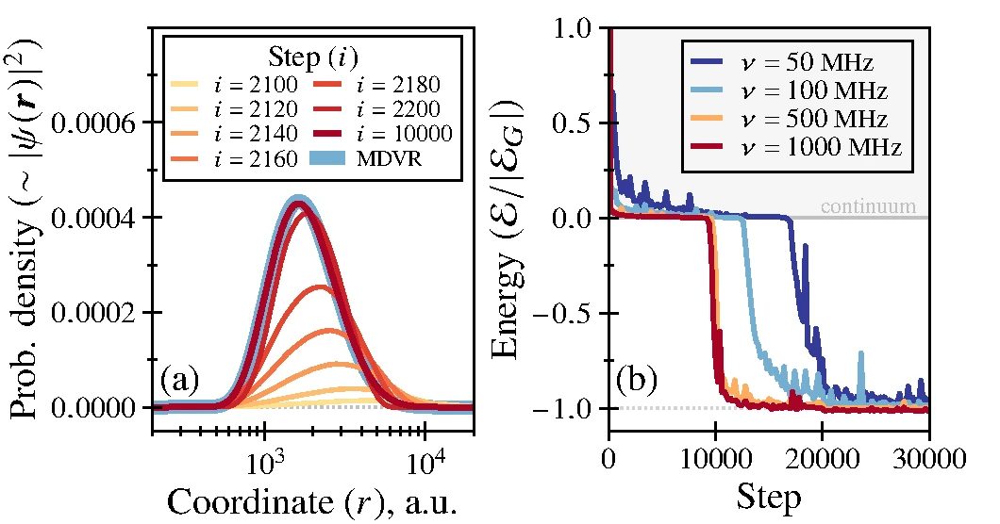

In short
This is a study of inductive bias when there is no training data to learn from. The task is to solve the Schrödinger equation for two or three ultracold molecules. Their interactions are long-range and direction-dependent, and conventional grid solvers become impractical beyond two molecules. The network is the solution, trained only by minimizing a variational energy. Against high-accuracy reference solvers, it recovers ground and excited bound states with mean relative errors below 0.01%, and three-molecule ground-state energies agree at the percent level with an independent grid calculation.
What’s new. The wave function is split into an analytic part, which carries the symmetry and the short- and long-range behavior that physics already tells us, and a neural residual that learns the rest. The same analytic part also gives a physics-informed distribution for sampling training points. This takes neural few-body solvers beyond simple particles with short-range, isotropic interactions, to realistic polar molecules and three-molecule bound states.
Why molecules, and why it's hard
Polar molecules cooled to near absolute zero can be controlled with external fields, which makes them a great playground for engineering quantum matter. Understanding what they do together requires their few-body bound states, which determine which pairs and triples of molecules stick together, and with what energy.
Finding them means solving an eigenvalue problem, the Schrödinger equation. For these molecules, the problem is difficult because the interactions are anisotropic (they depend on direction, not just distance) and long-ranged, and the molecules have internal structure. Every added molecule adds dimensions, and grid-based solvers that are very accurate for two molecules quickly become impractical beyond that.
Training without examples
Neural wave functions take a different route. The network is not fit to examples, because there are none. The network is the wave function, and it is trained by minimizing the energy it predicts. The variational principle says the true ground state has the lowest energy, so lower is better. Methods like FermiNet and PauliNet have made this very successful for electrons. But for few-body systems in continuous space, existing work mostly considered simple particles with short-range, isotropic interactions, not realistic molecules.
Building in what is already known
The main idea is simple. Before solving anything, physics already tells us two things about the answer.
- 1Symmetry. The wave function shouldn't care where in space the system is (translational invariance), and its angular dependence follows the structure of the Hamiltonian. Expanding in spherical harmonics handles the angles analytically and leaves a set of coupled radial functions, which can all be represented by one shared network.
- 2Short and long range. When two molecules get very close, the wave function must die off under the repulsive wall. When they're far apart, a bound state must decay exponentially. Both behaviors follow from the WKB approximation, a classic physics shortcut that predicts how a wave function decays in regions the particles classically cannot reach, without solving the full equation. We use it as an envelope, a fixed and deliberately loosened curve that multiplies the network’s output, so the right behavior at both ends is built in from the start.
So we factor the wave function as analytic envelope × neural residual. The network only has to learn the intermediate-range part, which is where the interesting physics is and where we don't have a formula.
What's left after the envelope
A one-dimensional toy version of the radial problem, not the paper’s system. Two particles have a hard repulsive core at short range and an attractive tail, with no angular structure, in units where ℏ = m = 1. The olive curve is the exact bound state (solved on a grid), and the dashed curve is the analytic envelope, built only from the short-range wall and the long-range decay. Here the envelope’s decay rate uses the exact energy, while in real training it follows the current energy estimate. Make the attraction stronger, and switch to log scale.
The log scale shows the problem a network would face on its own. The wave function covers many orders of magnitude, sharply suppressed inside the core and decaying exponentially outside. Divide out the envelope and what's left is a smooth curve that spans only one or two orders of magnitude, with no sharp features. That's a much easier function to learn, and it's what we mean by reducing the effective dimensionality of the problem. Nothing is approximated away. The network can still represent the full solution, it just doesn't have to waste capacity on the parts we already understand.
The envelope has a second use. It tells us where to look. To compute the energy, the wave function has to be evaluated at sample points, and those points should sit where the molecules are likely to be. The usual approach samples from the network’s own current guess, but that guess changes a lot during training. Early on, the learned density is nearly flat, and for weakly bound states the energy can stay at the unbound value for thousands of steps before the bound state suddenly forms (see the figure below). Points drawn from the model in that phase would be spread almost uniformly and say little about where the molecules are, and they would have to be redrawn again and again as the model changes, which is slow and unstable. Instead, we draw the points once, before training, from the envelope, and keep them fixed. In our tests, this was far more accurate and stable than resampling from the model.

What we found
- Two molecules. Benchmarked against a high-accuracy grid solver (mapped discrete variable representation), the method recovers both ground and excited bound states of field-linked molecular pairs, with mean relative errors of 0.003% for the ground state and 0.008% for excited states.
- Three molecules. Here conventional solvers struggle. The problem is six-dimensional with 190 coupled angular channels, and a straightforward grid would need about 150 GB to store a single wave function. Field-linked trimers have barely been studied. Our ground-state energies agree at the percent level with a separate grid calculation, providing an independent reference point for future three-body calculations.
- The inductive biases matter. We ablated them one at a time and looked at convergence, training stability, and which solution the optimizer ends up in. Without the analytic angular decomposition, the network needed about 15× larger batches and 100× longer optimization on the same hardware.
Cite
@article{bojan2026symmetry,
title = {Symmetry-Aware Residual Learning of Few-Body Molecular Wave Functions},
author = {Bojan, Meital and Maslov, Mikhail and Li, Jing-Lun and Bronstein, Alex M. and Lemeshko, Mikhail},
journal = {arXiv preprint arXiv:2611.33576},
year = {2026}
}